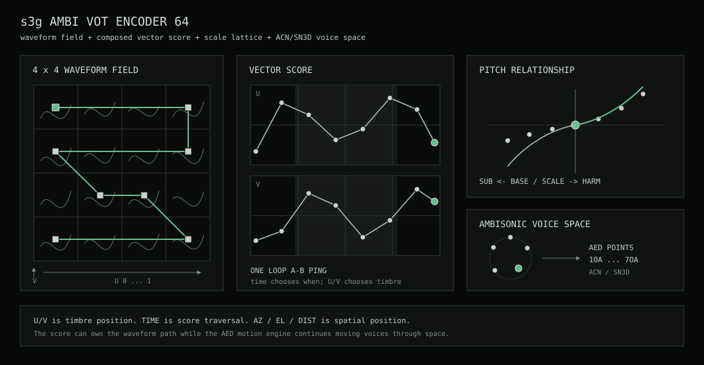

Ambi VOT Encoder
s3g Ambi VOT Encoder 64 is a 64-voice vector-wavetable CLAP instrument with direct first-through-seventh-order ACN/SN3D output. VOT stands for Vector Oscillator Transform.
Sixteen waveforms form a 4 x 4 timbre field. Voices move through that field under manual control, spatial motion, or an editable vector score, then occupy independent azimuth, elevation, and distance positions in the encoded sound field.

Workflow
- Insert
s3g Ambi VOT Encoder 64on a 64-channel REAPER track. - Choose
FREE,MIDI, orBOTHfor the voice source. - Select the ambisonic
ORDER, activeVOICES, wave set, and pitch relationship. - Use
FIELDfor spatial motion,VECTORfor the wavetable surface, andSCOREto compose a timbre path. - Place an ambisonic decoder or meter after the instrument.
FREE generates sustained voices internally. MIDI creates voices from incoming notes. BOTH combines both behaviors.
Control Model
The instrument keeps timbre and space independent:
Uis horizontal position in the 4 x 4 waveform field.Vis vertical position in the waveform field.TIMEplaces a node along the vector score.AZ,EL, andDISTplace a voice in ambisonic space.
U and V are normalized from 0 to 1. They are timbre coordinates, not physical axes. The waveform at any position is a smooth Gaussian-weighted blend of nearby tables.
Views
| View | Purpose |
|---|---|
| FIELD | Shows voice positions, nearest-neighbor relationships, camera views, and AED motion. |
| VECTOR | Shows the 4 x 4 waveform bank, the current U/V route, and the interpolated waveform. |
| SCORE | Edits U and V as parallel timeline lanes and shows the resulting route through the waveform field. |
Vector Score
The score contains 2 to 16 nodes. Select a node in SCORE view, then edit its time, U/V position, and interpolation curve. Use the header - and + buttons to change the node count, or RESET to restore the default score.
| Control | Meaning |
|---|---|
| MODE | OFF disables score traversal. ONE plays once, LOOP repeats the sustain region, and PING alternates direction. |
| DURATION | Sets the complete score duration. |
| DEPTH | Sets how strongly the score owns U/V. At 100%, the score supplies the full timbre path; lower values retain more spatial-scene and LINK influence. |
| LOOP A | Selects the first node in the sustain loop. |
| LOOP B | Selects the last node in the sustain loop. |
| TIME | Places the selected node within the score duration. |
| U / V | Places the selected node in the waveform field. |
| CURVE | Chooses LINEAR, SMOOTH, EXP, or HOLD interpolation into the next node. |
On trigger, score playback begins at the first node and advances into the sustain loop. On release, it moves from the current position toward the final score node. The score changes timbre only; the AED motion engine can continue moving voices through space.
Tuning
| Control | Meaning |
|---|---|
| BASE | Sets the root MIDI note for free-running voices and the scale lattice. |
| TUNE | Applies a global tuning offset in cents. |
| SCALE | Selects CHROM, MAJOR, MINOR, PENTA, WHOLE, or HARM MIN. |
| SPREAD | Scales intervals around BASE. 0% collapses voices to the root, 100% uses normal scale spacing, and 200% doubles the intervals. |
| DEV | Adds deterministic per-voice pitch deviation, up to approximately +/-100 cents. |
| HARM | Pulls upper scale degrees toward the harmonic series around BASE. |
| SUB | Pulls lower scale degrees toward the subharmonic series around BASE. |
Synthesis
WAVEselectsSINE,CLASSIC,DIGITAL,FORMANT, orUSER.LOADimports a 16-table user bank from a WAV file. Purpose-built 4096-sample atlases map directly to the grid; other files are divided into sixteen equal regions. Multichannel files are averaged to mono.SCANand its rate move voices around their current vector position.MORPHcontrols interpolation among neighboring waveform tables.ATTACK,DECAY,SUSTAIN, andRELEASEshape note amplitude.OUTtrims the encoded output.
Wavetable Library
The included library contains twenty-eight 4 x 4 atlases. Neighboring cells are phase-aligned for smooth Gaussian interpolation, while pitch-dependent table bands reduce aliasing in higher registers. Most banks are RMS-matched; selected dynamic banks intentionally change level as the vector moves. A loaded USER atlas is saved with the REAPER project.
- Foundation, Body / Bass, Pulse / Reed, Formant, Organ, Glass / Metal, Fold / Phase, Digital, and String cover tonal, harmonic, resonant, and early-digital materials.
- Rungler turns shift-register feedback and tap families into an energy-rising digital field.
- Barberpole wraps octave-weighted spectra across the grid edges for looping ascent and descent illusions.
- Harmonic Mirage moves between chord-like missing fundamentals and compact harmonic clusters.
- Wave Terrain samples rotated paths through a deformed mathematical surface, with a quiet center and louder perimeter.
- Codec Ghost treats prediction residuals, stale blocks, and packet substitution as cyclic oscillator material. Codec Conceal and Cascade extend it through lost-block reconstruction and repeated transcode generations. Codec Residual is joined by Delta, Comb, and Feedback variations that expose finite-difference order, delayed predictor memory, and bounded recursive error as pitched material.
- Cellular converts evolving cellular-automata generations into activity-shaped waveforms.
- Glitch / Address moves through cyclic repeats, reversals, skips, and reordered waveform addresses.
- Glitch / PCM explores held samples, reduced amplitude words, bit patterns, and deterministic data-like cycles.
- Glitch / Fracture introduces polarity blocks, dropouts, hard edges, and broken waveform continuity.
- Vocal / Black Metal, Throat, Choir, and Animal provide formant, closure, strain, and body fields for vocal-source vector synthesis.
Rungler and Cellular span approximately 11 dB across U. The Codec family spans approximately 9 to 12 dB; Residual Delta, Comb, and Feedback span approximately 9.4, 9.9, and 12 dB respectively. Wave Terrain follows a radial energy basin. These level changes are part of the instrument behavior rather than automatic gain compensation. The exact U/V and energy mapping is listed in the library manifest and preview graphics. The generated files and source format are available in the VOT wavetable directory.
Spatial Motion
The AED engine provides MANUAL, ORBIT, FLOW, PATH, and PULSE scenes. Motion can run freely or follow host transport through CLOCK and DIV.
AMOUNT, motion SPREAD, COHERE, CHAOS, and SMOOTH shape the group motion. AZIMUTH, ELEV, and DISTANCE position its center. NEAR and NBR define nearest-neighbor relationships. In free mode, those relationships can determine when voices become active; LINK lets the spatial state influence U/V while DEPTH decides how much control remains with the vector score.
Order and Routing
The output bus remains 64 channels wide. The selected order activates the corresponding ACN channels and zeroes the remainder.
| Order | Active channels |
|---|---|
| 1OA | 4 |
| 2OA | 9 |
| 3OA | 16 |
| 4OA | 25 |
| 5OA | 36 |
| 6OA | 49 |
| 7OA | 64 |
Use a 64-channel track when changing order during a session or working at 7OA. Follow the instrument with an Ambi Speaker Decoder, Ambi Stereo Decoder, Ambi Head Decoder, or Ambi Energy Visualizer.
Automation and State
The synthesis, tuning, motion, and high-level score controls are available to REAPER automation. Individual score nodes and the loaded USER atlas remain internal composition layers and are saved with plugin state.